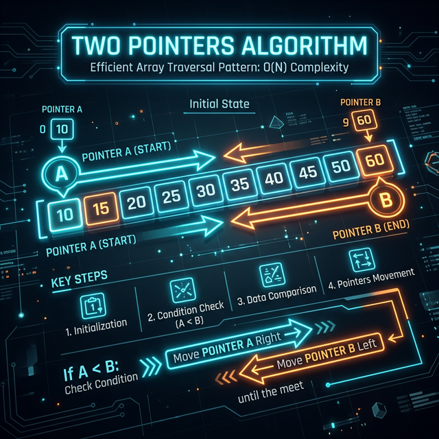

Two Pointers

Two Pointers
Two Pointers is a pattern where two pointers iterate through the data structure in tandem until one or both of the pointers hit a certain condition. It typically reduces complexity from O(N²) to O(N) by leveraging the sorted property of the input.
- "Sorted array or linked list"
- "Find a pair/triplet that sum to X"
- "Compare strings while ignoring case/punctuation (Palindrome)"
Reasoning: Brute Force to Optimized
Check all possible pairs using two nested loops.
Time: O(N²)
Since the array is sorted, we can use the order to intelligently skip invalid pairs. If the sum of the smallest and largest is too large, no other number added to the largest will work.
Start pointers at both ends. Move the left pointer right to increase the sum, or the right pointer left to decrease the sum.
Time: O(N)
If the array is unsorted and you need to return original indices. Sorting the array
destroys the original indices. You would need to use a Hash Map
instead, or store tuples of (value, original_index) before sorting.
def two_pointers(arr, target):
# PRE-REQUISITE: The array MUST be sorted.
# If it's not, you must sort it first: arr.sort() -> O(N log N) time
left = 0
right = len(arr) - 1
while left < right: # STRICTLY less than.
current_sum = arr[left] + arr[right]
if current_sum == target:
return [left, right] # Found it!
elif current_sum < target:
# The sum is too small. Since the array is sorted,
# we need a bigger number. Move the left pointer right.
left += 1
else:
# The sum is too big. We need a smaller number.
# Move the right pointer left.
right -= 1
return [-1, -1] # Not foundRelevant Blind 75 Problems
Walkthrough: Two Sum II (Sorted)
Input: [2, 7, 11, 15], Target = 9 L=2, R=15 -> Sum 17 (Too big, shrink R) L=2, R=11 -> Sum 13 (Too big, shrink R) L=2, R=7 -> Sum 9 (Match found!)
⚠️ Common Interview Mistakes
- Not ensuring the array is strictly sorted first.
- Crossing boundaries (`left > right`) incorrectly causing out-of-bounds index errors.